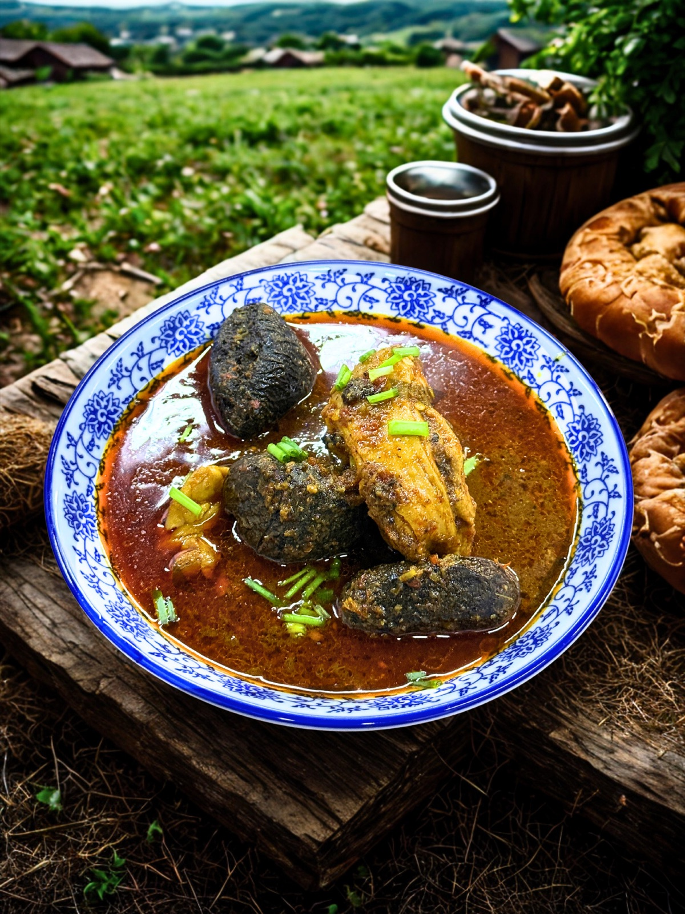

Nyonya Laksa
Our signature bowl with an aromatic, creamy and gently spicy broth, prepared with our family's rempah and served warm in the cool Mesilau air.
Baba Nyonya Heritage Dining
Discover home-cooked Peranakan flavours brought from Melaka to the cool highlands of Mesilau, near Mount Kinabalu. Every meal is prepared with care after your reservation is confirmed.
Reserve Your Dining Experience
From Melaka to Mesilau
Tranquera House was founded by a Baba Nyonya family with roots in Melaka and a home in Sabah. Our food carries the flavours, memories and family recipes passed from one generation to the next.
Here in Mesilau, Kundasang, we share those flavours through warm hospitality and carefully prepared heritage dishes. Dining with us is not simply about eating—it is about experiencing our family story.
We begin preparing your meal only after your order is confirmed—not when you arrive and not from food cooked earlier in the day. Advance reservation gives us time to source ingredients, prepare our rempah and cook each dish with the care authentic Baba Nyonya cuisine deserves.
Our menu celebrates the sweet, savoury, spicy and aromatic flavours that make Baba Nyonya cuisine so distinctive.
Our signature bowl with an aromatic, creamy and gently spicy broth, prepared with our family's rempah and served warm in the cool Mesilau air.
Fresh prawns and pineapple cooked in a rich, fragrant coconut gravy—sweet, savoury and gently spicy in every spoonful.

A comforting heritage chicken dish slowly cooked with fermented bean paste, potatoes and warm savoury flavours.

A rare and distinctive Peranakan favourite with deep, earthy buah keluak flavours—an experience many guests discover for the first time here.
Enjoy the warmth of a family-run dining experience, surrounded by the peaceful atmosphere and cool mountain air of Mesilau, Kundasang. Tranquera House is located near Mount Kinabalu and the popular attractions of the Kundasang highlands.
Yes. Our meals are available by advance reservation because preparation begins only after your order is confirmed.
Walk-in availability is not guaranteed. Contact us early so we can confirm the dishes and dining time available for your visit.
Our ingredients are halal, and we do not use pork, lard, cooking wine or alcohol in our cooking.
We are located in Mesilau, Kundasang, Sabah, close to Mount Kinabalu and popular highland attractions.
Yes. Non-staying guests are welcome when dining is reserved and confirmed in advance.
Tell us your preferred date, number of guests and dishes. Our team will confirm availability and help plan your meal before you arrive.
Reserve Through WhatsApp